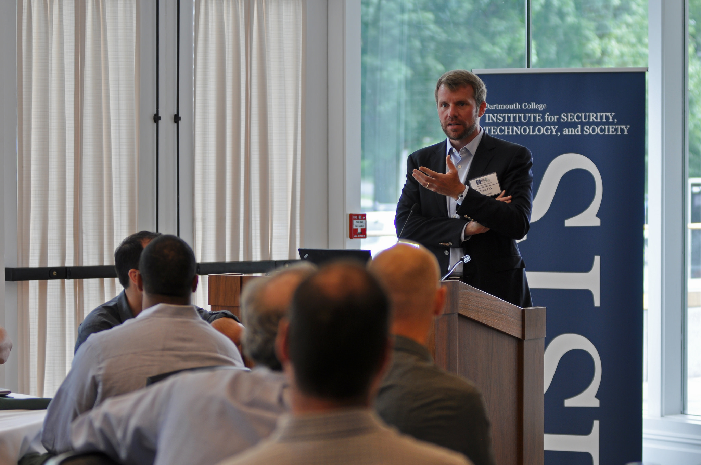

Securing the eCampus: Ten Observations About Cyber Security in Academia

by Nate Fick
I recently gave the keynote address at “Securing the eCampus,” a gathering of university CIOs and CISOs hosted by Dartmouth College. Drawing on my fifteen years of experience in the kinetic security world, running a security software company, and serving on the Board of Trustees at Dartmouth, I offered ten observations on the cyber landscape, especially as it pertains to academic environments:
1) Most of us are creatures of analogy when it comes to cyber – we’re all, to some extent, steering by looking in the rear-view mirror. So how did we get here? I think we need to look back to the 1991 Gulf War, after which the Chief of Staff of the Indian Army said that the great lesson was “don’t pick a fight with the U.S. unless you have nuclear weapons.” By dominating the middle of the spectrum of conflict – WW2-style tank-on-tank warfare – we drove our adversaries to the poles: Afghanistan and Iraq on the “low” (insurgency) end, Iran and North Korea on the “high” (nuclear) end. Cyber is where the two meet: there are low barriers to entry to achieving capabilities that can have global impact – very cheap, somewhat easy, and extremely powerful.
2) The cyber world is characterized by four vectors moving in the same direction but at different speeds:
- Technology is progressing very quickly;
- Social norms are evolving just behind that technical frontier;
- Then there’s a huge gap to where the law is trying to keep up;
- Slowest of all, policy formulation within the context of the law remains the most stagnant domain.
Most of the really interesting things are happening in that gap between technical feasibility/new social norms and the law/policy playing catch-up.
3) Cyber is blurring the lines between states and commercial actors, rendering conflict possible between any combination of states, state proxies, non-state actors, and commercial companies. The old model of states solely attacking states and companies spying only on companies is obsolete (the Iranian attacks on American banks a few years ago were a wake-up call in the popular consciousness). Most enterprises, both federal and commercial, now face similar challenges in cyber security.
4) The line between offense and defense is similarly nebulous, driven by technical evolution and also by the dissolution of the perimeter. The old paradigm was American football: 11 guys on the field playing ‘O’ and then 11 guys on the field playing ‘D’. The new paradigm is a lot more like European football: whether you’re on offense or defense depends upon which direction the ball is traveling on the field. It’s a faster and more dynamic world. (Just to be clear: I’m very much against private companies conducting offensive cyber operations…in addition to the legal issues, my time in the kinetic security world as a Marine left me with a strong appreciation for escalation dominance: don’t pick a fight you can’t win, and I don’t know of any company that can possibly win against a state or state-sponsored adversary.)
5) A relentless increase in connected devices, from roughly 9B connected things today to 40B connected things by the end of this decade, will greatly strain an eCampus security environment. Connecting 1B devices per quarter for the foreseeable future means massively increasing device proliferation, data proliferation, and network complexity. Just in the campus environment, for example, the average student today has 3 devices and the average student in four years will have 5 devices.
6) There are no more fortresses: the perimeter isn’t just gone, it’s been burned to the ground. Mobility/device proliferation, cloud migration, and the vastly increasing attack surface of the Internet of Things (remember that the attack vector in the recent Target data breach was the HVAC system…) mean that all this PII is flowing out to IaaS and cloud applications. Security teams need to gain and maintain visibility across infrastructures they don’t own and cannot control.
7) The security industry has a persistent and growing talent gap. Universities can help with the supply side of that equation through STEM education, but that takes a long time, so let’s also focus on the demand side by building tools that are easy to use. Can the industry bring consumer-style ease of use to security? Can we bring all the interesting things that are happening in analytics and visualization to bear on this problem? And incidentally, can we make the adjustment to realize – and I’m making a prediction here – that the Target breach and its aftermath will be looked back on as a watershed moment? A public company CEO was fired by the board because of a data breach. These issues will be less and less delegable to the CISO by a President or CEO, less and less delegable to a communications officer by a commanding general, and so we as an industry need to find a way to present what’s happening in a format that is digestible in the C-suite.
8) We must move from threat-based analysis to risk-based security intelligence. Universities are not immune from the cyber threat, but the degree of risk varies significantly, depending on a given source of attack and the kind of target. Let’s just postulate that in academic environments Russian intrusions typically target personal identifying information, while Chinese attacks generally target biochemistry and engineering research. Some universities are implementing frameworks to establish data location and sensitivity – mapping exactly where all its research and data is stored, and then color-coding it according to sensitivity. Because university networks are so porous and global, it’s often difficult to even recognize a breach attempt. For global universities that experience daily connections from countries around the world, nothing is an anomaly. We need to move towards:
- Reducing noise by focusing on relevance and risk instead of on arbitrary alerts.
- Extending visibility to every aspect of a digital domain instead of only behind the false security of a perimeter fortress.
- Empowering users to do data-driven exploration instead of relying only on PhD data scientists and mathematicians. Lead with insights, not with data.
This all starts to define a new aspect of security, something like “Security Intelligence” – the real-time collection, normalization, and analysis of the data generated by users, applications and infrastructure that impacts the IT security and risk posture of an enterprise. The goal of Security Intelligence is to provide actionable and comprehensive insight that reduces risk and operational effort for any size organization. None of that is especially controversial in the world where I typically operate – corporations and the government. But I put on my Dartmouth Trustee hat and think, “wow, real-time collection and analysis of user-generated data” is going to raise eyebrows in academic environments, which gets to the ninth observation…
9) Privacy and security cannot be in opposition to one another. First, we need to de-couple privacy and civil liberties in this conversation (historically, in America, I would argue that we have seen vastly expanding civil liberties even as privacy has diminished considerably – which isn’t to say that privacy doesn’t have great value; it’s just something a bit different). Second, we’ve been trading privacy for convenience for a long time – think not just of social media and email but about the first person who dictated a communication to a telegraph operator instead of sending a more private letter. But nonetheless, there’s a cultural aspect to academic communities that will inevitably be concerned with security adversely impacting intellectual freedom. The very purpose of these institutions is to promote academic and intellectual freedom, learning, and sharing. Unlike the tight controls that most enterprises employ, university technology systems are very porous. Because of their design (or intentional lack thereof…), university systems are often less secure: security and ops teams don’t manage the entirety of the systems that make up the network; students frequently oversee the assets they use; systems may be deployed and changed without much formal oversight and sometimes without IT’s knowledge. So I’ll conclude with a very simple 10th observation, which is only that…
10) Any workable management of these challenges is mostly human, not technical. Universities have gone through cultural transitions over the years as physical security has become a greater concern. Campus shootings have led to the widespread adoption of measures such as making students wear and show IDs, closing access to certain facilities at certain times of day, posting security guards at campus entrances, and more complex monitoring and alerting systems, while high-profile cases of sexual abuse or assault have led to increasing calls for background checks for employees and faculty. There may now need to be a cultural shift in how digital security is viewed as well—not as an intrusion, but as a measure of protection. Until this cultural shift happens, there will be continuing barriers to adopting better digital security measures on college campuses.